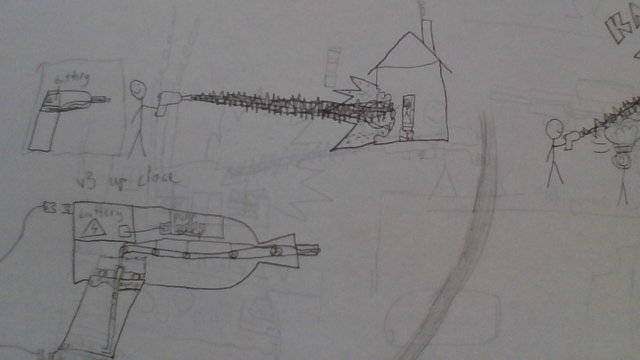

If you thing there are more things I should put on my wishlist for when I'm rich, reach out to me! lukesgotmail@aol.com
Here is more memes. The old memes are over at my old website.
These are some fictional inventions I've came up with that I think are cool:
Pumpkin Insta-Charge is a technology where if you tap a pumpkin on a device, the device will absorb the Pumpkin juice and use the Pumpkin Juice to charge it. 1 pumpkin can charge one of these devices for 30 years of continuous use*. Isn't that cool?? *With 12h of charging through the Pumpkin Juice everyday.
The Laser Boi is a laser gun that I made. It's actually just drawings of a super awesome laser gun, but I still did put a lot of thought in it. Here's a picture of blueprints and other things of the Laser Boi Version 3!
The Enhanced Robot Artificial Intelligence System - Turning Evil Blocker Device is a robot with a monitor attached to it to show a face, a PC as a body to do its required calculations, and has mechanical arms & legs so it can move. It also has a TEBD (Turning Evil Blocker Device) so it doesn't pull a GLaDOS on the world. I obviously got the inspiration of this concept design from Portal by VALVe.
Click here to see stuff I upload that you can download!